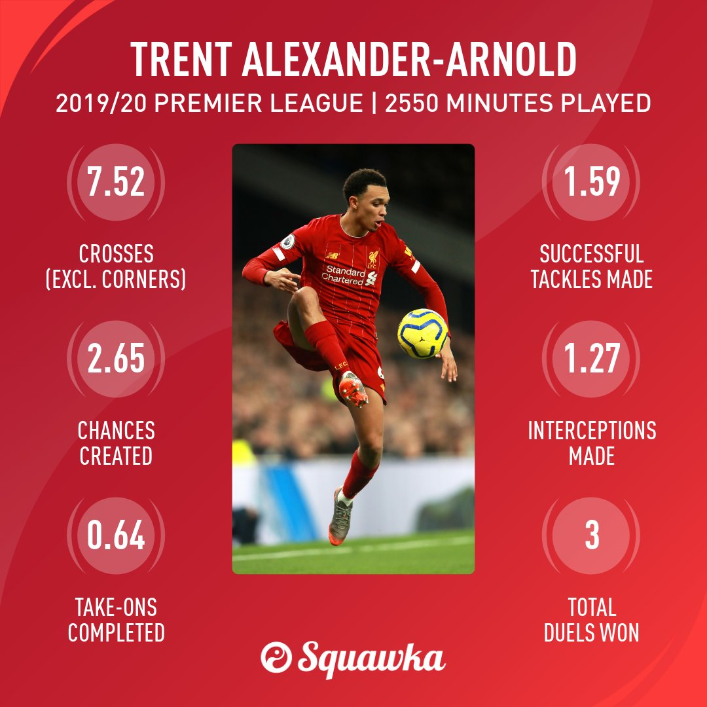

Thông tin cơ bản
Trent John Alexander-Arnold là cầu thủ bóng đá người Anh thi đấu ở vị trí hậu vệ cánh phải cho câu lạc bộ Liverpool và Đội tuyển bóng đá quốc gia Anh. Trưởng thành từ học viện đào tạo trẻ của Liverpool, Alexander-Arnold có mặt tại đội hình một từ mùa giải 2016-17.
Ngày/nơi sinh: 7 tháng 10, 1998 (22 tuổi), West Derby, Liverpool, Vương Quốc Anh
Chiều cao: 1,75 m
Cân nặng: 69 kg
Quốc tịch: Anh
Đội hiện tại: Câu lạc bộ Bóng đá Liverpool (#66 / Hậu vệ), Đội tuyển Bóng đá Quốc gia Anh (Hậu vệ)
Sự nghiệp cầu thủ
Trưởng thành từ học viện đào tạo trẻ của Liverpool, Alexander-Arnold có mặt tại đội hình một từ mùa giải 2016-17. Anh giành danh hiệu cầu thủ trẻ xuất sắc nhất của Liverpool trong các năm 2017 và 2018. Năm 2019, anh cùng Liverpool giành được danh hiệu vô địch UEFA Champions League, Siêu cúp châu Âu, FIFA Club World Cup và có tên trong đội hình tiêu biểu mùa giải của cả Premier League và UEFA Champions League. Một năm sau đó, anh là nhân tố chủ chốt của Liverpool trên con đường đi đến chức vô địch Premier League sau 30 năm chờ đợi. Anh đang giữ kỷ lục là cầu thủ trẻ nhất xuất phát hai lần trong trận chung kết UEFA Champions League.Đồng thời trong trận Liverpool rạng sáng 7/2/2021 anh đã bị Ster Mông Cong hành như con mặc dù đc các Loser cho là hậu vệ phải toàn diện nhất thế giới
Alexander-Arnold được gọi vào đội tuyển Anh từ năm 2018 và có cơ hội tham dự giải đấu lớn đầu tiên là World Cup 2018. Ngày 15 tháng 9 năm 2018, Alexander-Arnold có trận đấu thứ 50 cho Liverpool trong chiến thắng 2-1 trước Tottenham tại Premier League.[26] Ngày 24 tháng 11 năm 2018, anh lại có thêm một bàn thắng từ đá phạt trực tiếp, lần này là trong trận thắng Watford 3-0.[27] Tháng 12 năm 2018, anh về nhì trong cuộc bầu chọn danh hiệu Cậu bé Vàng, giải thưởng cho cầu thủ trẻ dưới 21 tuổi chơi ấn tượng nhất trong năm tại Châu Âu, sau cầu thủ người Hà Lan Matthijs de Ligt.